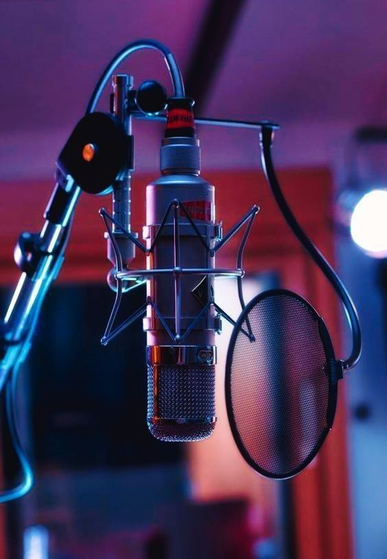

| asd |
Estación de Radio
Quiboc 97.1 FM

| asd |
Somos un equipo apasionado por la radio, comprometido en crear experiencias únicas y memorables para nuestra audiencia. Día a día, trabajamos con creatividad y dedicación para ofrecerte contenidos frescos, cercanos y llenos de energía, conectando contigo a través de cada programa y cada canción.
Saber más →Nuestros programas están diseñados para entretener, informar y conectar a nuestra audiencia con los temas más relevantes del momento. Desde música de todos los géneros, entrevistas exclusivas, noticias de actualidad y espacios de participación ciudadana, cada emisión busca ofrecer contenido de calidad para todos los gustos. Nuestro equipo de locutores y productores trabaja con pasión para crear una programación variada, dinámica y cercana a la comunidad.